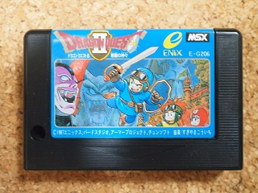
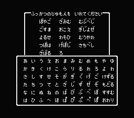
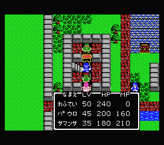
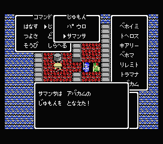
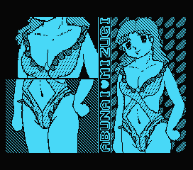
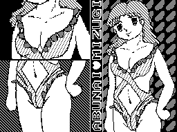
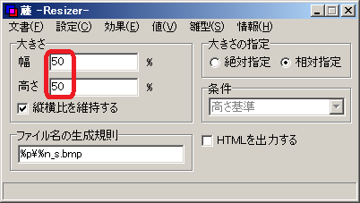
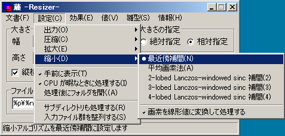
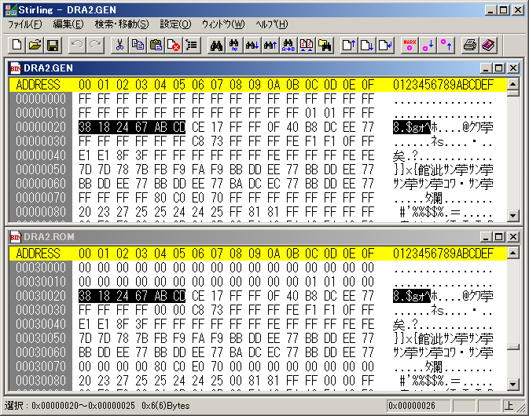
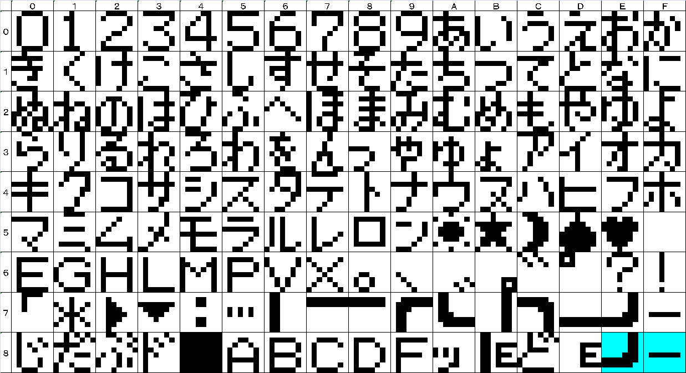

ドラゴンクエストII MSX版の裏技
MSX(1)版のドラゴンクエストIIには、「あぶないみずぎ」を入手すると、それを着たムーンブルクの王女の絵が表示されるという他機種版ではMSX2版でも出来ない裏技があるのはかなり有名な話で、ここで紹介するまでもない・・・と思ったのですが、その絵はお世辞にも魅力的とは言い難いものがあります(^-^; どうにかしてそれを差し替えられないものでしょうか。

大昔のROMソフトですし、おそらくは圧縮とかもされていないのだろうとは思いますが、ROMデータのどこにあるのか探す手がかりが欲しいところです。王女の絵はScreen2で表示されているようで、Screen2の画像はパターンジェネレータテーブル、カラーテーブル、パターンネームテーブルに分かれます。ざっくり説明すると、パターンジェネレータテーブルは8x8ドットの二値画像のパターンを一画面埋め尽くす分（768個）用意したものになります。カラーテーブルは、各8x8ドットのパターンについて、横8ドットの二値に対応する二色を定義したものになります。パターンネームテーブルは実際の画面を8x8ドットずつの領域に分け、各領域にパターンジェネレータテーブルで定義したどのパターンを表示するかを示すテーブルです。
王女の絵も二値画像っぽいので、パターンジェネレータテーブルを探してみればなんとかなりそうです。まずはエミュレータ（BlueMSX）上で再現させてスクリーンショットを撮り、王女の絵のパターンジェネレータテーブルを再現してみます。
Step1 : BlueMSXで王女の絵が表示されたときのスクリーンショットを撮ります。
復活の呪文で検索すると、復活の呪文を作ってくれるサイトがいくつか見つかります。今回はそれを利用しました。注意すべき点はラダトームからの再開、王女の持ち物をなくすことくらいでしょうか。

ラダトームの町の左側にある武器屋の二階のご隠居に会いに行きます。鍵はアバカムで開けます。


王女がなにも持っていない状態で話しかけます。がっかりするのは後回しにして、スクリーンショットを撮ります。

Step2 : スクリーンショットは544x480になっているため、左右16ドットずつ、上下48ドットずつを削除して512x384の画像にしてモノクロBMPで保存します。

Step3 : Step2で作った絵を256x192に縮小します。最近のペイントソフトは高機能で拡大・縮小しても見やすいようにアンチエイリアシングが自動でかかってしまいますので注意してください。例えばペイントブラシで縮小するとこんな感じになります。首付近を拡大したものですが、二色では無く微妙に違う色が入ってきています。
本来、こうなるべきものです。
アンチエイリアシングを無効にする方法はアプリによってあったりなかったり、設定名もまちまちなので、ここではVectorで見つけたしーやんさん作の "藤 -Resizer-" を例に挙げて説明します。サイズの変更は[幅]と[高さ]を[50%]にするだけです。

アンチエイリアシングを無効にするには[設定]-[縮小]で[最近傍補間(N)]を選択します。

あとはファイルをドロップすればできあがりです。
Step4：最後にぴろやんさん作のpiroPaint 9918を使ってScreen2の画像にします。ファイルをドロップして[File]-[Export]を選択し、[Add MSX Header]のチェックを外し、最後に[Export]ボタンを押してください。
Step5：拡張子が".GEN"のファイルがパターンジェネレータテーブルなのでバイナリエディタで開きます。ドラゴンクエストIIのROMファイルも開いておきます。
Step6：パターンジェネレータテーブルの00020hからの特徴的な"38 18 24 67 AB CD CE"をドラゴンクエストIIのROMファイルで検索してみると30020h辺りのパターンと一致していることが分かります。周辺部分もFFhの一部が00hになっている以外はほぼ一致しています。

ざっと追ってみると、パターンジェネレータテーブルの0000h〜17FFhがROMの30000h〜317FFhとほぼ同じであることが分かります。パターンジェネレータテーブル付近にカラーテーブルもあると思い、見てみると318000h〜32FFFhまでが70hで埋まっていてサイズからしてこれのようです。
実際にどう表示するかはパターンネームテーブル次第なのですが、それは見つけることが出来ませんでした。
Step7：これらのテーブルはベタデータのようなので、上書きすれば良さそうです。より魅力的なあぶない絵を同じような手順で作成し、入れ替えてみました。といっても絵心は無いので、インターネットのサイトから借用して加工しただけですが・・・。
パターンネームテーブルを見つけられなかったのでちょっと不安でしたが、無事に表示できたようです。
しかしちょっとあぶなすぎました(^-^;
本当にやってみたかったのはこんな感じです。
ツールの開発と絵の提供をしてくださったぴろやんさんに感謝です！
256x192のスクリーンショットを作るのにかなり手間がかかりますが、もっと簡単な方法をご存じの方がいればお教えくださいm(__)m
一本目のムービーでは最後の王女のメッセージもちょっと変えてみました。
MSXでもフォントはゲーム内で作っているようで「あ」を拡大してみるとこんな感じです。
黒を0、白を1とすると下記の通りです。
00100000 : 20h
11111100 : FCh
00100000 : 20h
00111100 : 3Ch
01100110 : 66h
10101010 : AAh
10010010 : 92h
01100100 : 64h
"20 FC 20 3C 66"で検索してみると、3FB50hに見つかります。その周辺を逆の手順でフォントにしてみると3FB00から下記のようにフォントデータを持っていることが分かりました。

3FB00h〜3FB07hが"0"のフォントデータで、3FB08h〜3FB0Fhが"1"のフォントデータ、という風に並んでいます。ゲーム内で使う文字コードとしては、00hが"0"、01hが"1"となります。
5行目の黄色で示した、"太陽"、"星"・・・は紋章のマークです。6行目の6A、6Bの"゛"と"゜"は、濁音と半濁音の記号ですが、フォント内の右下にあり、下の行に来る文字の為の濁音、半濁音になるようで、その場合、EEh、EFhで指定するようで宇。6C、6Dの"゛"と"゜"はフォント内の左上にあって、左に来る文字の濁音、半濁音になります。
あとはそれを元に台詞をサーチして、書き換えるだけです。注意点としては文字数が変わらないようにすること、改行はFEhというところでしょうか。8Eh、8Fhは7Eh、7Fhと同じなのでゴミのようです。MSX2版では違うデータになっていますが、文字ではありませんでした。
また、一本目のムービーでは二人目の王子と三人目の王女の名前を変えていますが、これはROMイメージをいじったものではなく、通常の裏技です。名前や復活の呪文の最後の入力時に[STOP]と[SELECT]を押しておけば名前を変えられます。（以前、復活の呪文の時は[DEL]キーも押す必要があると記載しましたが間違いでした。[DEL]キーは不要です。）
■補足
kindle売られている「ENIX移植プログラマー戦記」（川俣 晶 著）にドラクエ２を移植したときの話が書かれています。古い話なので正確さに欠くところがありそうですが、あぶない水着の実装に至った背景等が書かれていて興味深いです。
お約束ですが、この噂を見て改造などを行い故障やその他問題が発生しても責任は負えません。各自の責任において情報を広く集めて行うことをおすすめします。